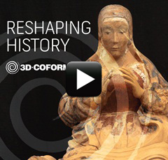
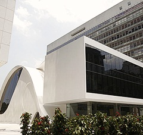

Remodelando a História no Rio!

Passando pelo conto do impressionante grifo medieval italiano e pelos mistérios do antigo templo egípcio de Abu Simbel,
esta exposição percorre o mundo para ilustrar as mais recentes inovações científicas e tecnológicas em 3D para o sector de preservação
de herança cultural. Os estudos de caso que fazem parte da exposição auxiliaram descoberta de segredos escondidos do nosso passado.
Leia mais (em inglês)
De Agosto a Outubro de 2014

A FGV/EMAp hospedará a exposição the "Remodelando a História visita o Rio de Janeiro".
A exposição intinerante integra a iniciativa do centro de competência VCC-3D em promover os avanços
no estado da arte em digitalização 3D e documentação de acervos 3D como uma alternativa para o setor de preservação de herança cultural.
Leia mais (em breve)
+ Oficina sobre Tecnologias 3D

Uma oficina sobre tecnologias 3D e suas aplicações no setor de preservação de herança cultural será realizada no dia
1 de Setembro de 2014 no novo Centro cultural da FGV,na Praia de Botafogo 190, Botafogo Rio de Janeiro.
O programa inclui palestrantes convidados e um painel de discussão com especialistas. Reserve a data!!.
Leia mais (em breve)